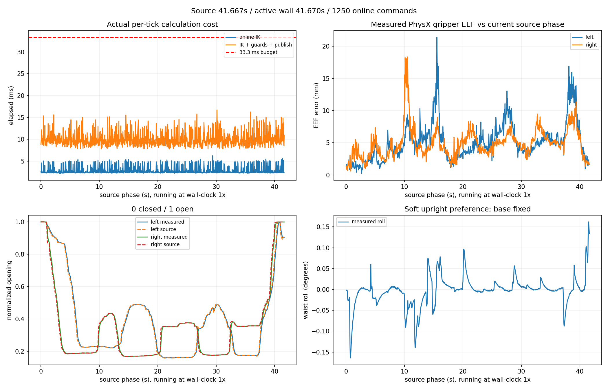
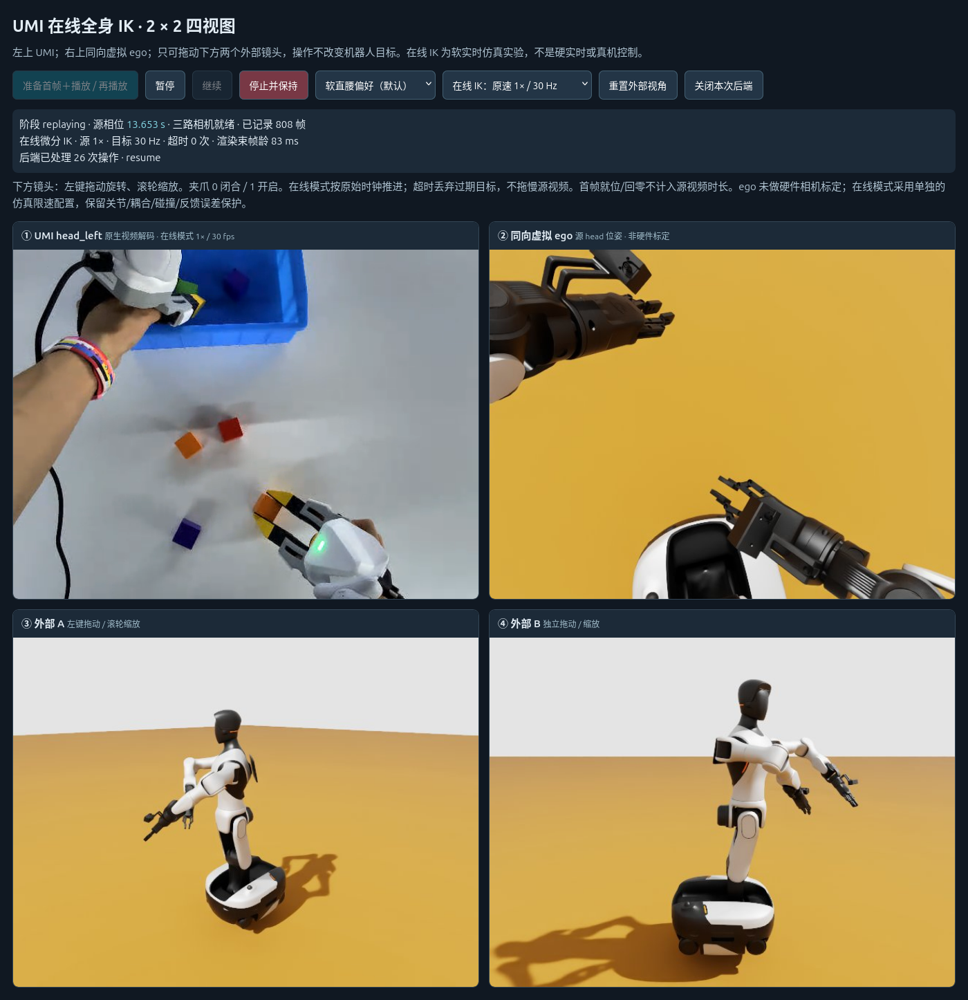
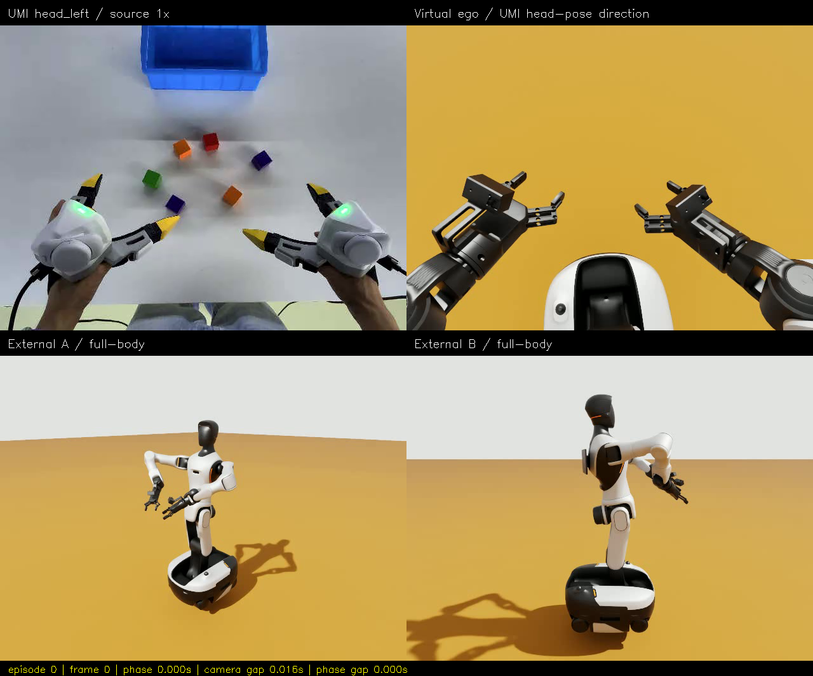
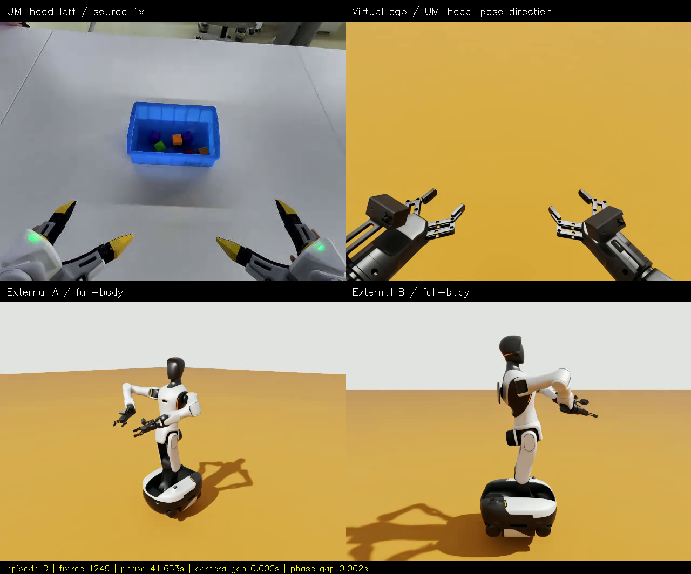
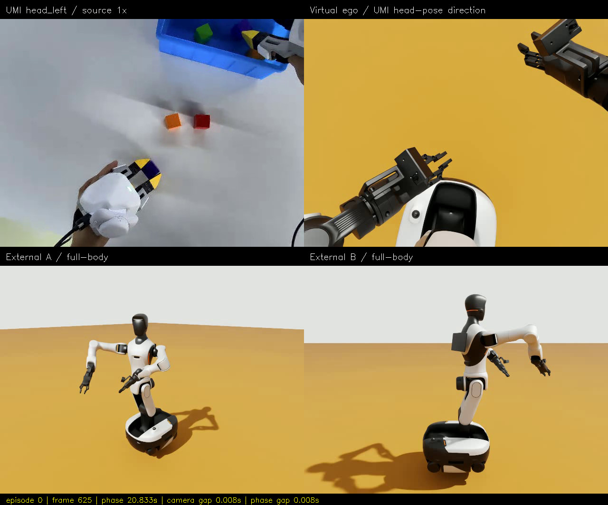

UMI → G2 · v5：原速在线全身 IK
2026-10-15 · 固定底盘 · 腰部＋双臂＋夹爪 · 动态指尖 EEF · 真实 PhysX 反馈
本轮修复并验收通过：慢放、非逐周期 IK、三视图传输空档。
源片段 41.6667 秒，实际执行 41.6700 秒，1250 次在线命令，零超时。这不是把旧的 934 秒运动加速成 42 秒。
本页是离线验收资料。真正可拖动的仿真入口：在线四视图控制台，选择“在线 IK：原速 1× / 30 Hz”后点击播放。
源片段 41.6667 秒，实际执行 41.6700 秒，1250 次在线命令，零超时。这不是把旧的 934 秒运动加速成 42 秒。
本页是离线验收资料。真正可拖动的仿真入口：在线四视图控制台，选择“在线 IK：原速 1× / 30 Hz”后点击播放。
直接播放：原速 2 × 2 四分屏
左上原始 UMI head_left；右上同向虚拟 ego；下方两个外部镜头。1250 帧 / 30 fps / 41.666667 秒，机器人实际执行片段同为约 41.67 秒。渲染帧按真实 ROS 时间戳匹配，最大相位误差 41.1 ms；原有 100 ms 阈值未放宽。
直接打开视频 · 完整验收说明 · 机器可读指标 · 实际执行报告 · 来源和 SHA256
| 本轮验收 | 结果 |
|---|---|
| 在线 IK / 控制周期 | 目标 30 Hz；1250 次命令，零超时、零跳目标 |
| IK 求解 / 含碰撞检查的周期 P95 | 4.94 ms / 13.38 ms；周期最大 16.72 ms，小于 33.33 ms 预算 |
| 实际 EEF 最大位置误差，左 / 右 | 21.410 / 18.359 mm；P95 11.355 / 8.585 mm |
| 结束时实际 EEF 位置误差，左 / 右 | 1.600 / 1.591 mm |
| 腰 roll / 底盘漂移 | 最大绝对 roll 0.1641°，最大平移漂移 2.047 μm |
| 三路图像传输修复 | 同场景 6 秒：完整束帧 35 → 176；最大束帧间隔 967 → 42 ms |
| 原生浏览器操作 | 真实鼠标拖动、滚轮、重置、播放、暂停、继续与整段结束通过 |
真实跟踪与计算耗时

运行中的真实 Web 界面

在线浏览器实测：源相位 / 墙钟倍率 1.000021；视频时钟相位差最大 110.2 ms；实际呈现约 24.58 fps。时钟原速不等于每个浏览器都能完整显示全部 30 fps，不能混淆这两个指标。
首帧 / 中间帧 / 末帧



边界条件
新周期求解器是本仓库的 URDF Jacobian＋OSQP 微分 IK；BioIK 只负责首帧姿态准备。使用单独的仿真限速配置和一帧目标前瞻，保留关节、耦合、离散碰撞与反馈误差保护。这是软实时运动学仿真，不是厂商硬实时控制或力矩级 WBC。
ego 未标定光学内外参；机器人空场景没有重建方块/箱子，因此不代表抓取成功。原始数据：TacVerse/xtac-umi-g1-block-to-box，CC-BY-SA-4.0；含源画面的图片/视频进行了缩放与拼接。详细原理见 实时回放说明。本目录可整体复制后离线观看。